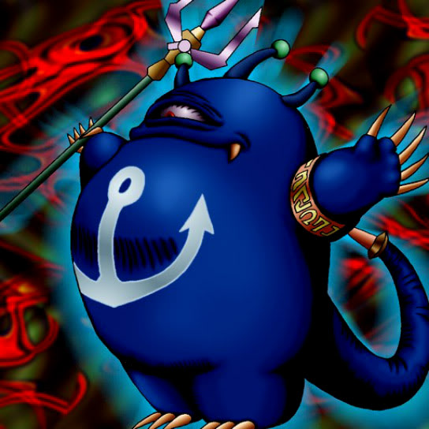

Turu-Purun

Description: "Gains 1000 bonus points when engaging in battle against FISH monsters."
STATS
ATK: 450
DEF: 500DECK COST
Deck Cost per Card: 15EFFECT NOT IMPLEMENTED
Fusion List (7 Possible Fusions)
- Turu-Purun + Electric Lizard = Bolt Escargot
- Turu-Purun + Electric Snake = Bolt Escargot
- Turu-Purun + Kairyu-Shin = Sea King Dragon
- Turu-Purun + LaLa Li-oon = Bolt Escargot
- Turu-Purun + Mega Thunderball = Bolt Escargot
- Turu-Purun + Oscillo Hero #2 = Bolt Escargot
- Turu-Purun + Psychic Kappa = Hyosube